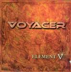

| Artist: | Voyager |
| Title: | Element V |
| Label: | DVS DVS010 |
| Length(s): | 55 minutes |
| Year(s) of release: | 2004 |
| Month of review: | [09/2005] |
| 1) | Sic Transit Gloria Mundi | 2.32 |
| 2) | To The Morning Light | 5.26 |
| 3) | Cosmic Armageddon Part I | 5.28 |
| 4) | Towards Uncertainty | 1.15 |
| 5) | The Eleventh Meridian | 5.04 |
| 6) | This Bitter Land | 4.46 |
| 7) | The Ancient Labyrinth | 5.23 |
| 8) | Miseria | 0.37 |
| 9) | Monument | 6.25 |
| 10) | The V Element | 2.22 |
| 11) | Cosmic Armageddon Part II | 6.34 |
| 12) | Kingdoms Of Control | 5.27 |
| 13) | Time For Change | 4.10 |
| 14) | Echoes Of Old Terra | 1.32 |
The EM side of Cosmic Armageddon Part I reminds quite a bit of Jarre. In fact, it is not strange to liken Voyager to a Jarre like exponent of progmetal. The vocal parts are rather varied on this one: we have plain vocals, growled vocals, and Rhapsody style up-beat/singalong vocals. Towards Uncertainty is a short interlude with piped synth sounds and modern rhythms. Again, I get the impression that the keyboardist could as well be an electronic musician. The short song does have vocals, a bit somber this time. The vocal melody is quite good.
Opening with synth style horns, The Eleventh Meridian is another catchy tune with plenty of pace. The vocal melody is dominant, and quite alright. This Bitter Land opens a bit crackly, probably because of a vinyl effect, after which the music actually bursts loose. The vocals are sung in duet at times: the growl and the plain vocals together. The dominant factor here are the rhythm guitars this time around. Of course, the vocals do have the usual melodicity, and there is a melodic guitar solo as well.
The Ancient Labyrinth moves us more into powermetal territory with some classical interludes. So think Rhapsody here, and those who followed. Miseria is a vocal only track, going straight to Monument, which has those classical music ingredients popularized by one Yngwie Malmsteen. Like Rhapsody, I sometimes wonder whether this music is meant to be taken seriously. Listen to that middle part.
The V Element is not the longest track on the album. In fact, it is an instrumental song with elements of modern (industrial) dance and rock. It does sound original, and urgent too. I wonder why I do like this.
Some classical citations open Cosmic Armageddon Part II. They continue in pacey, accessible style with plenty of pomp. Halfway, the song changes for the melodramatic. Kingdoms Of Control continues the accessible brand of progmetal, with a bit of tenseness thrown in by virtue of a passage right after the middle in which the music dies down a bit. The guitar solo that follows meanders too much.
Time For Change has a combination of softer and rowdier vocals. Especially good is the vocal melody for the softer vocals. I think I would have focused on those a bit more. Now, the song becomes quite restless. Echoes Of Old Terra is the shortish conclusion, featuring acoustic guitar and a bit of keyboards in the back.